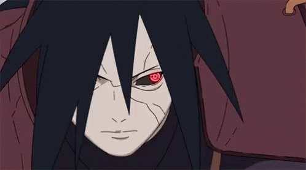

Top 1
Eren Yeager
(Attack on Titan) Eren Yeager, is a hero turned villian after he is pushed to his limits and decides to wipe out humanity outside the walls
Top 2
Uchiha Itachi
(Naruto) Itachi Uchiha is a talented shinobi from the Uchiha Clan who has made the ultimate sacrifice to safe the world and his brother
Top 3
Monkey D. Luffy
(One Piece) User of the Hito Hito no Mi A.K.A Human Model: Sun God Nika Fruit, travels the Grand Line in his ultimate journey to become the pirate king
Top 4

Uzumaki Naruto
(Naruto) The vessel of the nine tails and the hokage of the leave village, son to the fastest shinobi and the previous nine tails vessel
Top 5
Yuji Itadori
(Jujutsu Kaisen) Yuji is one of Tokyo Jujutsu High's most powerful and talented students. He specializes in hand to hand combat and his special move is the Black Flash
Top 6

Denji
(Chainsaw Man) After becoming one with the chainsaw devil he transforms into a chainsaw and utilizes his powers to hunt for the gun devil
Top 7

Yoichi Isagi
(Blue Lock) A footballer striving to be the top 1 striker, he utilizes his intellect, unnatural field awareness, and adaptability to best his opponents
Top 8
Zoro
(One Piece) Luffy's right hand man dubbed as the king of hell, he strives to be the best swordsman in the world utilizing the three swords style technique
Top 9
Uchiha Madara
(Naruto) The G.O.A.T, most feared shinobi and the strongest Uchiha shinobi. He utilizes the Mangekyo Sharingan as well as the Rinnegone to bring the world under his control
Top 10

Ryomen Sukuna
(Jujutsu Kaisen) The King of curses, responsible for the destruction of Shibuya District. The man who beat Gojo Saturo and Mahoraga with his godly curse techniques.